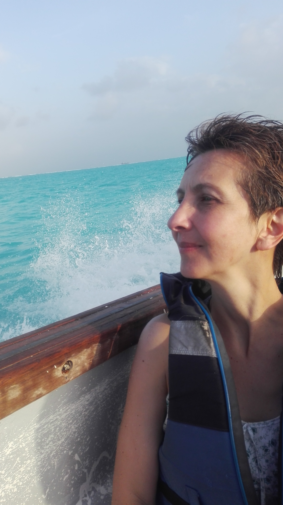

Cuando tenemos un nuevo empleo o actividad, nos encargamos del oficio que sabemos nos va a garantizar un trayecto estable, al menos por un tiempo. La expectativa es un motivador natural que nos ayuda en un principio, a empezar con actitud de aprender, aportar y participar. En poco, el estado de curiosidad queda atrás, automatizamos las tareas y nuestro ser laborioso pasa de estar apto a convertirse en experto; mientras toma curso y ritmo la ocupación, nuestro ser social también está involucrándose en el espacio - tiempo, sentirnos aceptados y encajar en el ambiente, es parte fundamental de este comienzo; como sea, la fase inicial pasa pronto y la vida diaria vuelve a ser un transcurrir rutinario que, por un tiempo nos hace sentir conformes a algunos, a otros incómodos y en poco a todos, obligados, atrapados, parados, estancados en el tengo que, debo de, esperando que nos digan qué y cómo hacerlo. Soñando con vacaciones, como un lujo que pocos se pueden dar, pensando en un nuevo trabajo y en toda serie de oportunidades que nos permitan escapar al sacrificio. Pues entérate querido lector, no es la rutina, ni la cantidad de trabajo, la universidad, el cargo, la gente, el ambiente, la guerra, la pobreza, ni la situación del país, del continente o el planeta con lo que lidiamos.
Recordemos, cuando éramos niños o adolescentes y en navidad había juguetes por doquier, no solo para uno sino para todos en casa y no tenía fin, recibir detalles, regalos y atenciones; o por el contrario era la epoca donde mas escuchábamos: no hay para esto o aquello, no alcanza, no hay suficiente, no hay….El tiempo pasó, crecimos y eso fue quedando justo ahí donde está ahora, en el recuerdo; como sea éste, malo o bueno, junto a otras similares experiencias, de donde quiera que ellas vengan, de nosotros, nuestros padres, abuelos, entorno, etc. Incidieron en nuestra esencia, personalidad y carácter e hicieron que aprendiéramos y reforzáramos mecanismos que nos aseguraran, mantener una relación separada, comparativa, competitiva, inflexible e insaciable, respecto a lo que hacemos, tenemos, ante lo que recibimos o damos, causando un sentimiento vacío, de que estamos incompletos y algo falta, de venir aquí a hacer mil cosas y nunca terminarlas, lo cual no es otra cosa que escasez, miedo a no tener.